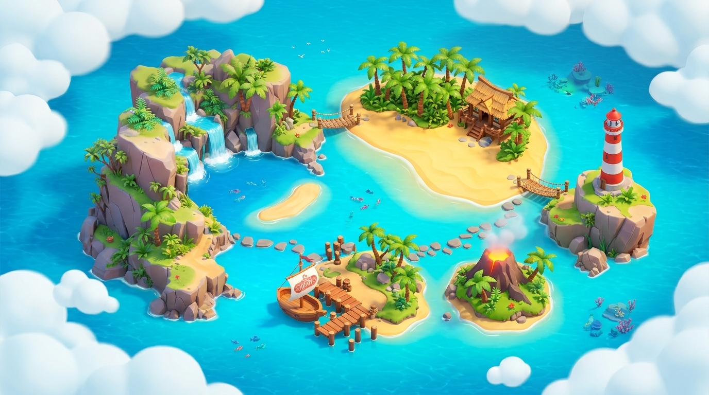

✅ 240 Selesai di Portal (Sudah Dikeluarkan)
Peta Bab 1
Selesai
Misi Sekarang
Ditunda 🚩
🏆 = Tugas/Sumatif
🌋
Terbang Menuju Pulau...
Pulau Gerak Ceria

🗺️
Klik Pulau untuk Zoom-In!
Peta Kepulauan Gabriel
🧭
Kapten Gabriel!
💨
✨
MISI AKTIF
LEVEL 1
🏝️ Pulau Daring Rutin
📅 Juli 2026
Memuat misi...
Modul...
📜 Daftar Misi Kronologis (0 Materi Belum Selesai & Belum Berjalan s/d Akhir Sem 1)
Urut berdasarkan minggu/tanggal dari yang paling awal. Klik misi mana saja untuk langsung membuka link Sekolah.mu atau menandai selesai/ditunda.